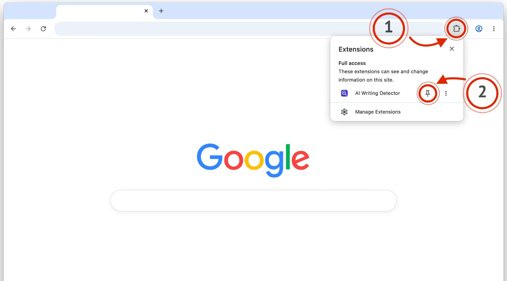
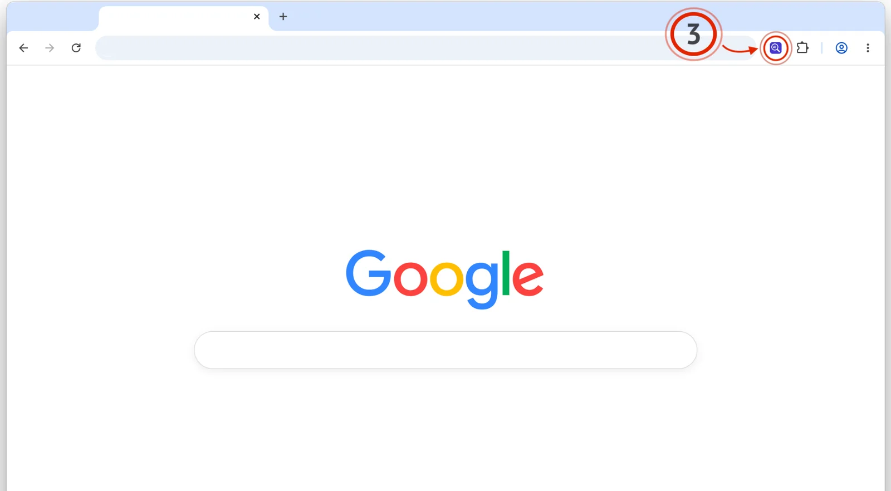

AI Writing Detector Installed
-
1.
Pin the extension for quick access to the AI Writing Detector.

-
2.
Simply click on the extension icon to open the AI Writing Detector.

Pin the extension for quick access to the AI Writing Detector.

Simply click on the extension icon to open the AI Writing Detector.
